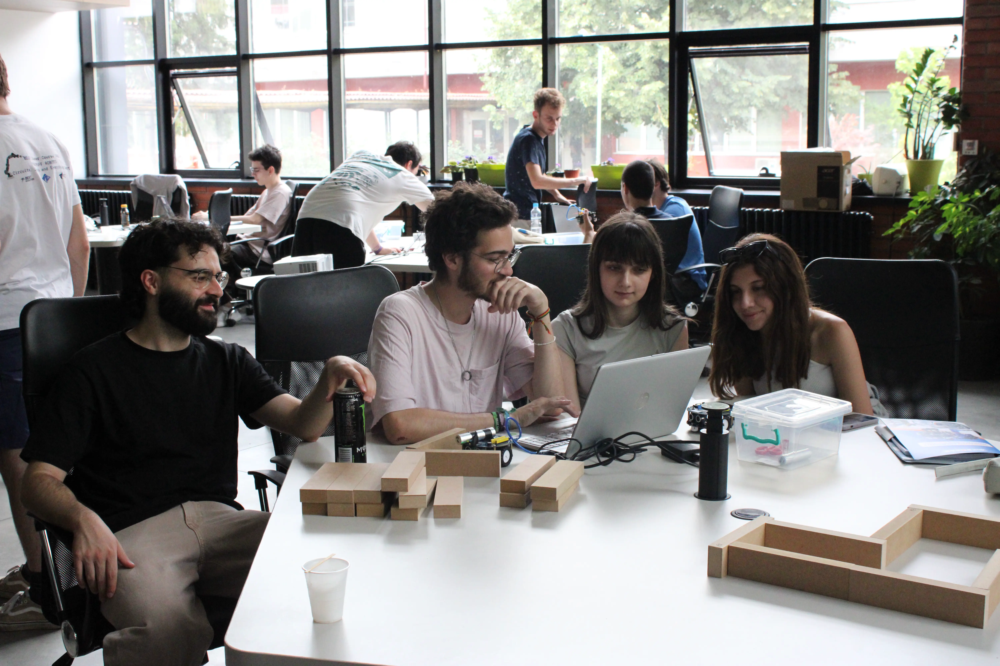
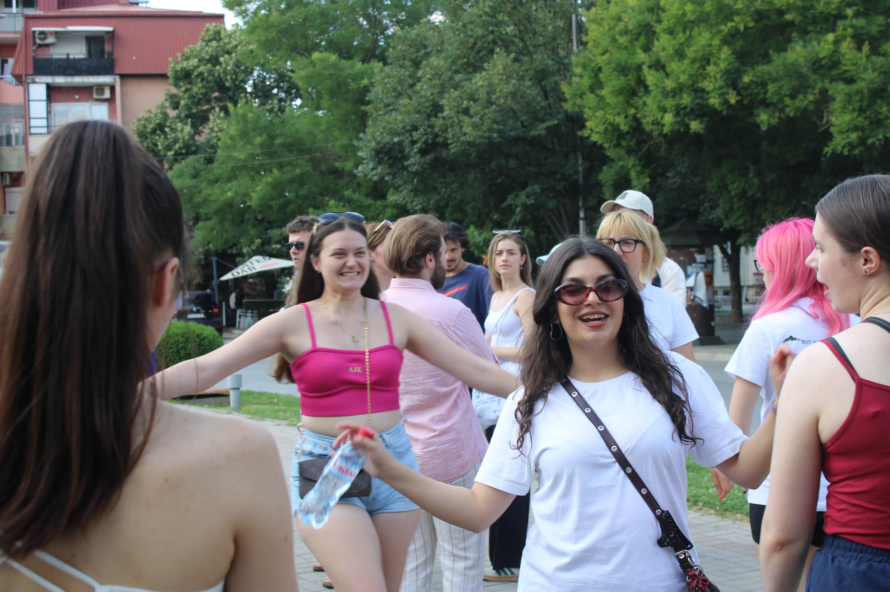

Designing Digital Experiences: Why Some Apps Feel Amazing
Some apps feel effortless, addictive, and strangely satisfying - while others make you want to delete them after 10 seconds. We use digital products every day, yet most people have no idea why certain apps feel amazing to use and others feel painful. What makes an app intuitive? Why do some designs just click? Is it talent, psychology, design rules or a bit of magic?
Join us as we dive into the world of UX/UI design, psychology, user behavior, and product thinking - all in a fun, interactive, and friendly way. You’ll learn how designers think, how small design decisions shape big emotions, and how digital experiences are crafted to feel smooth, human, and engaging. No boring classes - expect games, real-world examples, creative challenges, and lots of “aha!” moments.
And of course, it’s not just about learning. You’ll experience the vibrant energy of Skopje, explore the culture and history of North Macedonia, meet international students from all backgrounds, and create memories long after the course ends.